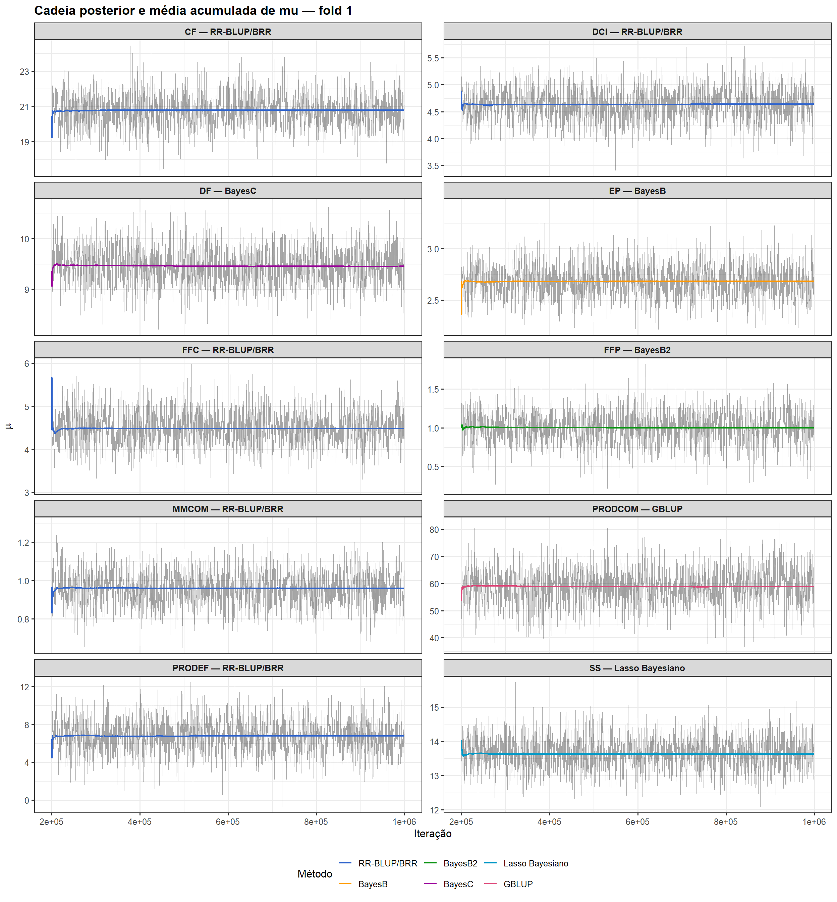
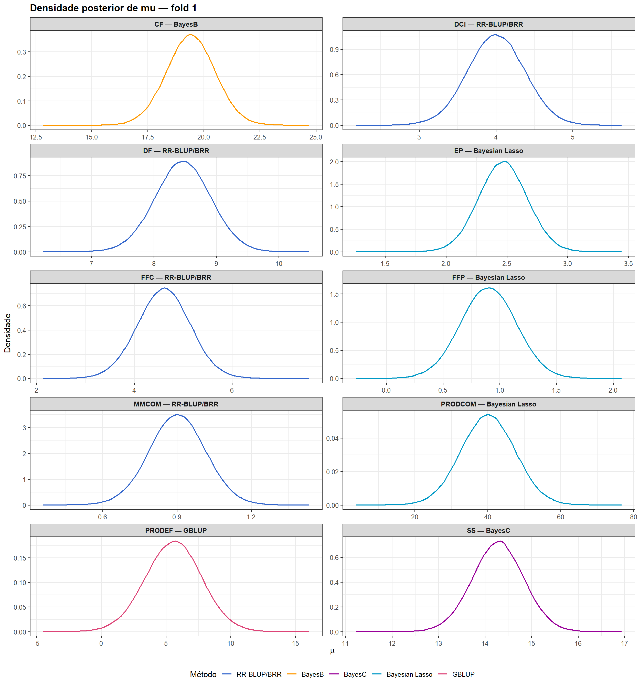
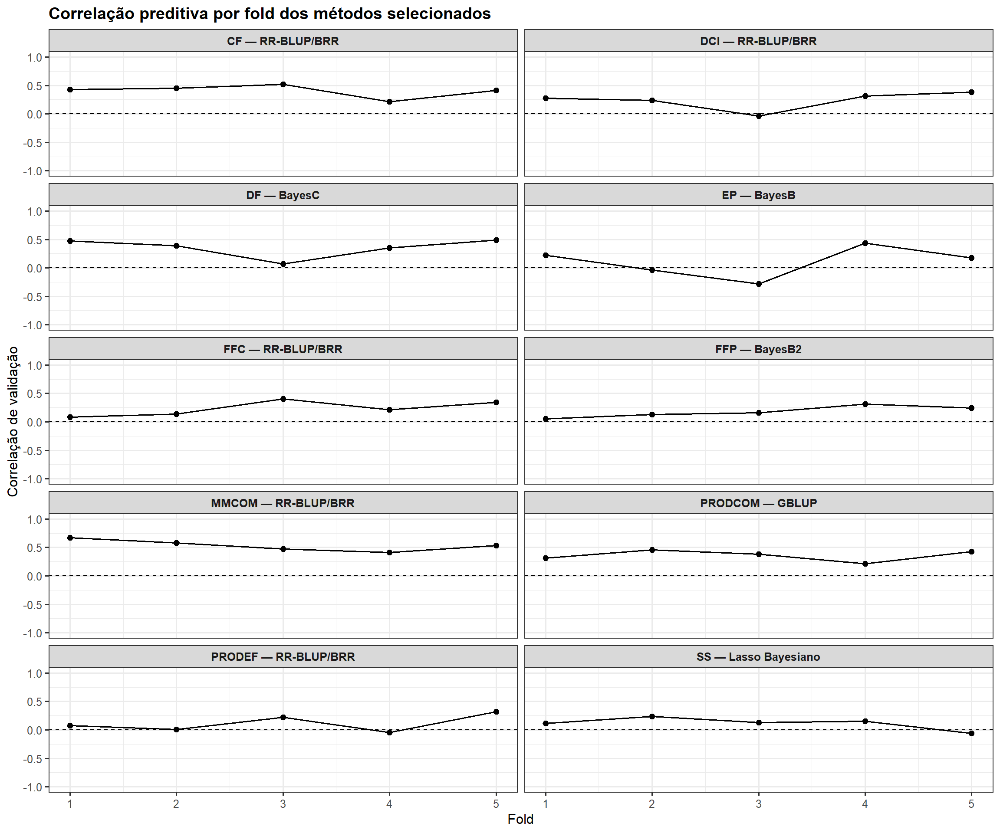
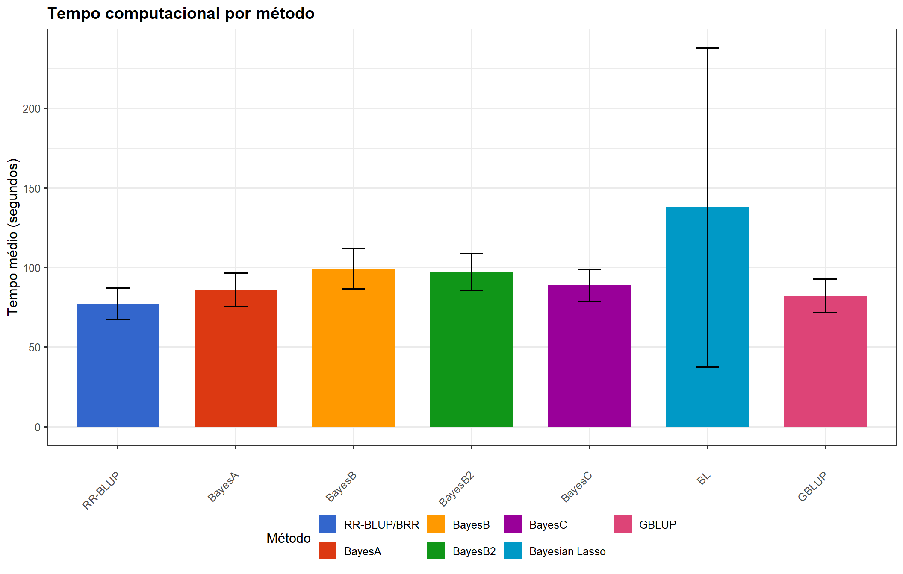
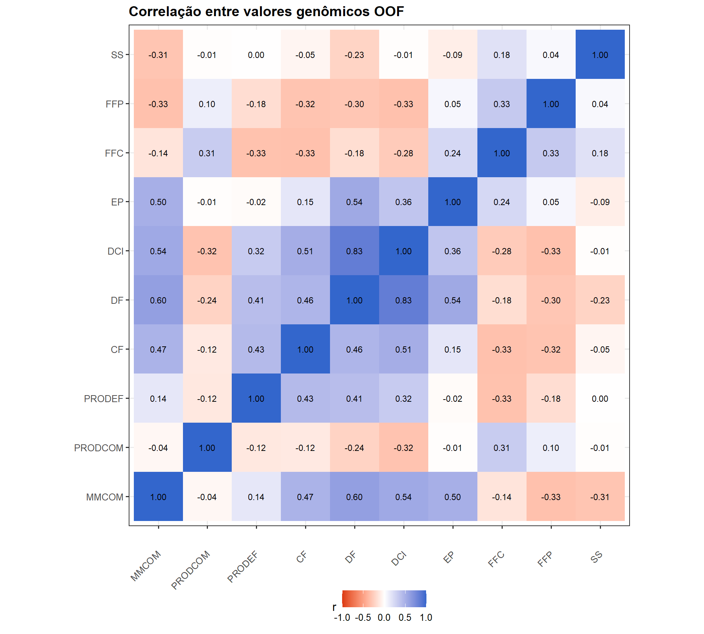

1. Objetivo
Este módulo organiza em tabelas e figuras os resultados derivados no Módulo 04. A apresentação começa pela comparação dos sete métodos, passa pelos métodos selecionados e pelos diagnósticos das cadeias, e termina com os resultados de seleção genômica e recorrência entre características.
2. Pacotes, resultados e padrão gráfico
suppressPackageStartupMessages({
library(dplyr)
library(ggplot2)
library(knitr)
library(here)
})A etapa seguinte carrega os objetos de entrada e define o padrão visual do módulo. Rótulos, cores, tamanho-base de fonte, dimensões das figuras e resolução de exportação são escolhas exclusivamente de apresentação: não entram em nenhum cálculo de desempenho, seleção ou inferência. A paleta é mantida fixa para que cada método tenha a mesma identificação visual em todas as figuras.
# Define os caminhos de saída e carrega os objetos necessários para este módulo.
MODELS_FILE <- here("output", "models", "models_object.rds")
M04_FILE <- here("output", "results", "m04", "module04_results.rds")
RESULTS_DIR <- here("output", "results", "m05")
FIGURE_DIR <- file.path(RESULTS_DIR, "figures")
dir.create(FIGURE_DIR, recursive = TRUE, showWarnings = FALSE)
models_object <- readRDS(MODELS_FILE)
m04 <- readRDS(M04_FILE)
traits <- m04$traits
methods <- m04$methods
model_comparison <- m04$model_comparison
model_selection <- m04$model_selection
selected_fold_diagnostics <- m04$selected_fold_diagnostics
runtime_summary <- m04$runtime
# Recupera o resumo de herdabilidade derivado no M04.
rrblup_heritability_summary <- m04$rrblup_heritability_summary
selection_objectives <- m04$selection_objectives
selection_proportion <- m04$selection_proportion
positive_oof_traits <- m04$positive_oof_traits
selection_sizes <- m04$selection_sizes
selected_individuals_by_trait <- m04$selected_individuals_by_trait
multitrait_recurrence <- m04$multitrait_recurrence
recurrence_distribution <- m04$recurrence_distribution
multitrait_candidates <- m04$multitrait_candidates
selected_oof_correlations <- m04$selected_oof_correlations
# Define os rótulos legíveis dos métodos usados nas tabelas e figuras.
method_labels <- c(
RRBLUP = "RR-BLUP/BRR",
BayesA = "BayesA",
BayesB = "BayesB",
BayesB2 = "BayesB2",
BayesC = "BayesC",
BL = "Lasso Bayesiano",
GBLUP = "GBLUP"
)
selection_objective_labels <- c(
increase = "Aumentar",
decrease = "Diminuir"
)
# Define a paleta fixa usada para distinguir os métodos nas figuras.
method_colors <- c(
RRBLUP = "#3366CC",
BayesA = "#DC3912",
BayesB = "#FF9900",
BayesB2 = "#109618",
BayesC = "#990099",
BL = "#0099C6",
GBLUP = "#DD4477"
)
# Usa fonte-base 12 para legibilidade; essa escolha não altera qualquer resultado analítico.
project_theme <- theme_bw(base_size = 12) +
theme(
legend.position = "bottom",
strip.text = element_text(face = "bold"),
plot.title = element_text(face = "bold")
)A etapa seguinte resume a cobertura dos objetos de resultados recebidos antes de apresentar as tabelas e figuras finais.
# Monta a tabela-resumo apresentada nesta seção.
data.frame(
Item = c(
"Características",
"Métodos",
"Linhas da comparação dos métodos",
"Características com método selecionado",
"Características com correlação OOF positiva"
),
# Lista os valores correspondentes aos itens da tabela.
Valor = c(
length(traits),
length(methods),
nrow(model_comparison),
nrow(model_selection),
length(positive_oof_traits)
)
) |>
kable(caption = "Estrutura dos resultados apresentados neste módulo")| Item | Valor |
|---|---|
| Características | 10 |
| Métodos | 7 |
| Linhas da comparação dos métodos | 70 |
| Características com método selecionado | 10 |
| Características com correlação OOF positiva | 9 |
3. Comparação dos sete métodos
A tabela reúne DIC, diferença para o menor DIC, Wprob,
ER, correlação OOF e p-valor nominal para cada combinação
característica × método.
# Monta a tabela-resumo apresentada nesta seção.
model_comparison_display <- model_comparison |>
mutate(Method_label = unname(method_labels[Method])) |>
transmute(
Trait,
Method,
Method_label,
DIC = Mean_DIC,
Delta_DIC,
Wprob,
ER,
r,
p_value
) |>
arrange(match(Trait, traits), match(Method, methods))
# Formata a tabela para exibição no tutorial.
kable(
model_comparison_display |>
select(Trait, Method_label, DIC, Delta_DIC, Wprob, ER, r, p_value),
digits = 5,
caption = "Comparação dos sete métodos por característica"
)| Trait | Method_label | DIC | Delta_DIC | Wprob | ER | r | p_value |
|---|---|---|---|---|---|---|---|
| MMCOM | RR-BLUP/BRR | -19.27503 | 0.47768 | 0.18220 | 1.26978 | 0.52594 | 0.00000 |
| MMCOM | BayesA | -18.39509 | 1.35762 | 0.11735 | 1.97153 | 0.52828 | 0.00000 |
| MMCOM | BayesB | -17.64712 | 2.10560 | 0.08073 | 2.86566 | 0.52970 | 0.00000 |
| MMCOM | BayesB2 | -18.37572 | 1.37699 | 0.11622 | 1.99072 | 0.52853 | 0.00000 |
| MMCOM | BayesC | -18.46969 | 1.28302 | 0.12181 | 1.89935 | 0.52865 | 0.00000 |
| MMCOM | Lasso Bayesiano | -19.75271 | 0.00000 | 0.23136 | 1.00000 | 0.52604 | 0.00000 |
| MMCOM | GBLUP | -18.89039 | 0.86233 | 0.15033 | 1.53905 | 0.53525 | 0.00000 |
| PRODCOM | RR-BLUP/BRR | 1069.69129 | 0.85843 | 0.14808 | 1.53605 | 0.32866 | 0.00004 |
| PRODCOM | BayesA | 1070.03385 | 1.20099 | 0.12477 | 1.82303 | 0.33650 | 0.00003 |
| PRODCOM | BayesB | 1070.29057 | 1.45771 | 0.10974 | 2.07271 | 0.33745 | 0.00002 |
| PRODCOM | BayesB2 | 1070.05088 | 1.21802 | 0.12372 | 1.83861 | 0.33753 | 0.00002 |
| PRODCOM | BayesC | 1069.83114 | 0.99828 | 0.13808 | 1.64730 | 0.33337 | 0.00003 |
| PRODCOM | Lasso Bayesiano | 1069.98056 | 1.14770 | 0.12814 | 1.77509 | 0.31398 | 0.00009 |
| PRODCOM | GBLUP | 1068.83286 | 0.00000 | 0.22746 | 1.00000 | 0.34680 | 0.00001 |
| PRODEF | RR-BLUP/BRR | 714.33702 | 0.88547 | 0.13788 | 1.55696 | 0.04243 | 0.60614 |
| PRODEF | BayesA | 714.21462 | 0.76307 | 0.14658 | 1.46453 | 0.03834 | 0.64132 |
| PRODEF | BayesB | 714.51692 | 1.06537 | 0.12602 | 1.70350 | 0.04399 | 0.59295 |
| PRODEF | BayesB2 | 714.18318 | 0.73162 | 0.14890 | 1.44168 | 0.03764 | 0.64746 |
| PRODEF | BayesC | 714.44623 | 0.99468 | 0.13055 | 1.64434 | 0.04645 | 0.57247 |
| PRODEF | Lasso Bayesiano | 715.07389 | 1.62233 | 0.09539 | 2.25053 | 0.04604 | 0.57585 |
| PRODEF | GBLUP | 713.45155 | 0.00000 | 0.21467 | 1.00000 | 0.04868 | 0.55416 |
| CF | RR-BLUP/BRR | 557.47325 | 1.23062 | 0.11866 | 1.85023 | 0.38612 | 0.00000 |
| CF | BayesA | 557.77432 | 1.53169 | 0.10208 | 2.15081 | 0.39105 | 0.00000 |
| CF | BayesB | 556.87504 | 0.63241 | 0.16004 | 1.37191 | 0.40140 | 0.00000 |
| CF | BayesB2 | 557.73949 | 1.49686 | 0.10387 | 2.11368 | 0.39108 | 0.00000 |
| CF | BayesC | 556.61526 | 0.37263 | 0.18223 | 1.20480 | 0.39666 | 0.00000 |
| CF | Lasso Bayesiano | 556.24263 | 0.00000 | 0.21956 | 1.00000 | 0.38937 | 0.00000 |
| CF | GBLUP | 557.56128 | 1.31865 | 0.11355 | 1.93349 | 0.38893 | 0.00000 |
| DF | RR-BLUP/BRR | 348.38566 | 0.35115 | 0.16397 | 1.19193 | 0.32144 | 0.00006 |
| DF | BayesA | 349.08862 | 1.05411 | 0.11537 | 1.69394 | 0.31898 | 0.00007 |
| DF | BayesB | 349.38735 | 1.35284 | 0.09937 | 1.96683 | 0.32402 | 0.00005 |
| DF | BayesB2 | 349.08075 | 1.04624 | 0.11583 | 1.68728 | 0.31844 | 0.00007 |
| DF | BayesC | 348.56934 | 0.53484 | 0.14958 | 1.30659 | 0.32579 | 0.00005 |
| DF | Lasso Bayesiano | 348.03450 | 0.00000 | 0.19544 | 1.00000 | 0.32668 | 0.00005 |
| DF | GBLUP | 348.42909 | 0.39458 | 0.16044 | 1.21810 | 0.31568 | 0.00008 |
| DCI | RR-BLUP/BRR | 292.91611 | 1.02964 | 0.13319 | 1.67334 | 0.19977 | 0.01425 |
| DCI | BayesA | 293.53769 | 1.65122 | 0.09761 | 2.28327 | 0.19320 | 0.01785 |
| DCI | BayesB | 292.80553 | 0.91906 | 0.14076 | 1.58333 | 0.20067 | 0.01381 |
| DCI | BayesB2 | 293.53337 | 1.64691 | 0.09782 | 2.27835 | 0.19396 | 0.01739 |
| DCI | BayesC | 292.16068 | 0.27421 | 0.19431 | 1.14695 | 0.20036 | 0.01396 |
| DCI | Lasso Bayesiano | 291.88647 | 0.00000 | 0.22287 | 1.00000 | 0.22366 | 0.00594 |
| DCI | GBLUP | 293.23687 | 1.35041 | 0.11345 | 1.96443 | 0.15774 | 0.05388 |
| EP | RR-BLUP/BRR | 163.40063 | 2.56492 | 0.07935 | 3.60549 | -0.07501 | 0.36165 |
| EP | BayesA | 161.87424 | 1.03853 | 0.17021 | 1.68079 | -0.05250 | 0.52346 |
| EP | BayesB | 161.93661 | 1.10090 | 0.16499 | 1.73403 | -0.04587 | 0.57723 |
| EP | BayesB2 | 161.86181 | 1.02610 | 0.17127 | 1.67038 | -0.05196 | 0.52772 |
| EP | BayesC | 162.94325 | 2.10754 | 0.09974 | 2.86844 | -0.06188 | 0.45187 |
| EP | Lasso Bayesiano | 165.45862 | 4.62290 | 0.02836 | 10.08906 | -0.08990 | 0.27395 |
| EP | GBLUP | 160.83571 | 0.00000 | 0.28609 | 1.00000 | -0.03791 | 0.64506 |
| FFC | RR-BLUP/BRR | 376.65991 | 0.78523 | 0.13288 | 1.48085 | 0.20954 | 0.01007 |
| FFC | BayesA | 376.39440 | 0.51972 | 0.15175 | 1.29675 | 0.19081 | 0.01934 |
| FFC | BayesB | 376.61768 | 0.74299 | 0.13572 | 1.44990 | 0.18609 | 0.02260 |
| FFC | BayesB2 | 376.39884 | 0.52416 | 0.15141 | 1.29963 | 0.19037 | 0.01962 |
| FFC | BayesC | 376.73506 | 0.86037 | 0.12798 | 1.53754 | 0.20038 | 0.01395 |
| FFC | Lasso Bayesiano | 377.15990 | 1.28521 | 0.10349 | 1.90143 | 0.21841 | 0.00725 |
| FFC | GBLUP | 375.87468 | 0.00000 | 0.19678 | 1.00000 | 0.19537 | 0.01658 |
| FFP | RR-BLUP/BRR | 198.97132 | 3.79713 | 0.04267 | 6.67630 | 0.05764 | 0.48354 |
| FFP | BayesA | 195.86016 | 0.68597 | 0.20214 | 1.40915 | 0.08642 | 0.29303 |
| FFP | BayesB | 195.98702 | 0.81284 | 0.18972 | 1.50143 | 0.08881 | 0.27979 |
| FFP | BayesB2 | 195.82252 | 0.64833 | 0.20598 | 1.38288 | 0.08692 | 0.29019 |
| FFP | BayesC | 198.06354 | 2.88935 | 0.06717 | 4.24048 | 0.06943 | 0.39856 |
| FFP | Lasso Bayesiano | 202.45688 | 7.28269 | 0.00747 | 38.14317 | 0.03160 | 0.70110 |
| FFP | GBLUP | 195.17419 | 0.00000 | 0.28485 | 1.00000 | 0.09007 | 0.27304 |
| SS | RR-BLUP/BRR | 381.93088 | 0.45336 | 0.14665 | 1.25443 | 0.08483 | 0.30202 |
| SS | BayesA | 382.39277 | 0.91526 | 0.11640 | 1.58032 | 0.08191 | 0.31903 |
| SS | BayesB | 382.11319 | 0.63568 | 0.13387 | 1.37415 | 0.08376 | 0.30815 |
| SS | BayesB2 | 382.41585 | 0.93834 | 0.11507 | 1.59866 | 0.08151 | 0.32137 |
| SS | BayesC | 381.73997 | 0.26246 | 0.16133 | 1.14023 | 0.08491 | 0.30153 |
| SS | Lasso Bayesiano | 381.47751 | 0.00000 | 0.18396 | 1.00000 | 0.09498 | 0.24764 |
| SS | GBLUP | 381.98514 | 0.50762 | 0.14272 | 1.28893 | 0.06721 | 0.41385 |
A etapa seguinte constrói a visualização correspondente para facilitar a interpretação do diagnóstico.
# Ordena os métodos e constrói o gráfico de correlação OOF por característica.
predictive_plot <- model_comparison |>
mutate(Method = factor(Method, levels = methods)) |>
# Constrói o gráfico usado na interpretação.
ggplot(aes(x = Method, y = r, fill = Method)) +
geom_hline(yintercept = 0, linetype = 2, linewidth = 0.4) +
geom_col(width = 0.75) +
facet_wrap(~ Trait, scales = "fixed", ncol = 2) +
scale_fill_manual(
values = method_colors,
breaks = methods,
labels = method_labels
) +
scale_x_discrete(labels = method_labels) +
labs(
x = NULL,
y = "Correlação OOF",
fill = "Método",
title = "Capacidade preditiva dos sete métodos"
) +
project_theme +
theme(axis.text.x = element_text(angle = 45, hjust = 1))
predictive_plot
# Salva a saída consolidada para uso posterior.
ggsave(
file.path(FIGURE_DIR, "predictive_correlation_by_method_pt.png"),
predictive_plot,
width = 13,
height = 10,
dpi = 300
)4. Métodos selecionados por característica
A etapa seguinte organiza, para cada característica, o método selecionado, os vencedores de referência e os indicadores que sustentam a decisão.
# Monta a tabela-resumo apresentada nesta seção.
final_results_summary <- model_selection |>
mutate(
Method_label = unname(method_labels[Selected_method]),
Predictive_winner_label = unname(method_labels[Predictive_winner]),
DIC_winner_label = unname(method_labels[DIC_winner]),
Decision_label = case_when(
Decision_code == "rrblup_best_predictive_model" ~
"RR-BLUP/BRR foi o melhor modelo preditivo",
Decision_code == "rrblup_preferred_among_competitive_models" ~
"RR-BLUP/BRR preferido entre métodos competitivos",
Decision_code == "best_non_rrblup_competitive_model" ~
"Melhor método competitivo não RR-BLUP",
Decision_code == "predictive_winner_provisional_review_required" ~
"Vencedor preditivo provisório; revisão necessária",
TRUE ~ Decision_code
),
Selection_status_label = case_when(
# Traduz o status interno de seleção para o rótulo apresentado ao leitor.
Selection_status == "rule_based_selected" ~
"Seleção baseada na regra",
Selection_status == "provisional_review_required" ~
"Seleção provisória; revisão necessária",
TRUE ~ Selection_status
)
) |>
transmute(
Trait,
Method_label,
Decision_label,
Selection_status_label,
RRBLUP_preference_applied,
Predictive_winner = Predictive_winner_label,
# Mantém o vencedor por DIC com o rótulo legível do método.
DIC_winner = DIC_winner_label,
Predictive_loss,
r,
p_value,
RMSE,
DIC = Mean_DIC,
Delta_DIC,
Wprob,
ER,
Parameters_flagged,
Runs_with_flags,
OOF_predictive_direction
) |>
arrange(match(Trait, traits))
# Formata a tabela para exibição no tutorial.
kable(
final_results_summary,
digits = 5,
caption = "Métodos selecionados e diagnósticos por característica"
)| Trait | Method_label | Decision_label | Selection_status_label | RRBLUP_preference_applied | Predictive_winner | DIC_winner | Predictive_loss | r | p_value | RMSE | DIC | Delta_DIC | Wprob | ER | Parameters_flagged | Runs_with_flags | OOF_predictive_direction |
|---|---|---|---|---|---|---|---|---|---|---|---|---|---|---|---|---|---|
| MMCOM | RR-BLUP/BRR | RR-BLUP/BRR preferido entre métodos competitivos | Seleção baseada na regra | TRUE | GBLUP | Lasso Bayesiano | 0.00931 | 0.52594 | 0.00000 | 0.22822 | -19.27503 | 0.47768 | 0.18220 | 1.26978 | 0 | 0 | positive |
| PRODCOM | GBLUP | Melhor método competitivo não RR-BLUP | Seleção baseada na regra | FALSE | GBLUP | GBLUP | 0.00000 | 0.34680 | 0.00001 | 20.28306 | 1068.83286 | 0.00000 | 0.22746 | 1.00000 | 0 | 0 | positive |
| PRODEF | RR-BLUP/BRR | RR-BLUP/BRR preferido entre métodos competitivos | Seleção baseada na regra | TRUE | GBLUP | GBLUP | 0.00624 | 0.04243 | 0.60614 | 4.89616 | 714.33702 | 0.88547 | 0.13788 | 1.55696 | 0 | 0 | positive |
| CF | RR-BLUP/BRR | RR-BLUP/BRR preferido entre métodos competitivos | Seleção baseada na regra | TRUE | BayesB | Lasso Bayesiano | 0.01528 | 0.38612 | 0.00000 | 2.48352 | 557.47325 | 1.23062 | 0.11866 | 1.85023 | 0 | 0 | positive |
| DF | BayesC | Melhor método competitivo não RR-BLUP | Seleção baseada na regra | FALSE | Lasso Bayesiano | Lasso Bayesiano | 0.00089 | 0.32579 | 0.00005 | 1.06619 | 348.56934 | 0.53484 | 0.14958 | 1.30659 | 0 | 0 | positive |
| DCI | RR-BLUP/BRR | RR-BLUP/BRR preferido entre métodos competitivos | Seleção baseada na regra | TRUE | Lasso Bayesiano | Lasso Bayesiano | 0.02389 | 0.19977 | 0.01425 | 0.81393 | 292.91611 | 1.02964 | 0.13319 | 1.67334 | 0 | 0 | positive |
| EP | BayesB | Melhor método competitivo não RR-BLUP | Seleção baseada na regra | FALSE | GBLUP | GBLUP | 0.00796 | -0.04587 | 0.57723 | 0.49738 | 161.93661 | 1.10090 | 0.16499 | 1.73403 | 0 | 0 | nonpositive |
| FFC | RR-BLUP/BRR | RR-BLUP/BRR preferido entre métodos competitivos | Seleção baseada na regra | TRUE | Lasso Bayesiano | GBLUP | 0.00887 | 0.20954 | 0.01007 | 1.14603 | 376.65991 | 0.78523 | 0.13288 | 1.48085 | 0 | 0 | positive |
| FFP | BayesB2 | Melhor método competitivo não RR-BLUP | Seleção baseada na regra | FALSE | GBLUP | GBLUP | 0.00314 | 0.08692 | 0.29019 | 0.58135 | 195.82252 | 0.64833 | 0.20598 | 1.38288 | 0 | 0 | positive |
| SS | Lasso Bayesiano | Melhor método competitivo não RR-BLUP | Seleção baseada na regra | FALSE | Lasso Bayesiano | Lasso Bayesiano | 0.00000 | 0.09498 | 0.24764 | 1.23162 | 381.47751 | 0.00000 | 0.18396 | 1.00000 | 0 | 0 | positive |
5. Cadeias MCMC dos métodos selecionados
Para cada característica são mostradas a cadeia posterior de \(\mu\), sua média acumulada e a densidade posterior no primeiro fold do método selecionado.
# Converte o burn-in para a escala das amostras salvas e prepara os traces e densidades posteriores de mu.
burn_in_saved <-
models_object$settings$burn_in /
models_object$settings$thin
selected_method_lookup <- setNames(
model_selection$Selected_method,
model_selection$Trait
)
trace_parts <- vector("list", length(traits))
density_parts <- vector("list", length(traits))
for (trait_index in seq_along(traits)) {
# Identifica a característica e o método selecionado.
trait_name <- traits[trait_index]
method_name <- selected_method_lookup[trait_name]
# Localiza a cadeia de mu do primeiro fold.
mu_file <- file.path(
here("output", "models", "bglr"),
trait_name,
"F1",
method_name,
"bglr_mu.dat"
)
mu_full <- scan(mu_file, quiet = TRUE)
# Remove as amostras correspondentes ao burn-in.
posterior_mu <- mu_full[
seq.int(burn_in_saved + 1L, length(mu_full))
]
iteration <- seq.int(
from = models_object$settings$burn_in + models_object$settings$thin,
by = models_object$settings$thin,
length.out = length(posterior_mu)
)
# Calcula a média acumulada e reduz a densidade de pontos do gráfico.
running_mean <- cumsum(posterior_mu) / seq_along(posterior_mu)
keep_index <- seq.int(1L, length(posterior_mu), by = 100L)
trace_parts[[trait_index]] <- data.frame(
Trait = trait_name,
Method = method_name,
Facet = paste0(trait_name, " — ", method_labels[method_name]),
Iteration = iteration[keep_index],
Posterior_mu = posterior_mu[keep_index],
Running_mean = running_mean[keep_index]
)
# Estima a densidade posterior de mu para o método selecionado nesta característica.
density_object <- density(posterior_mu, n = 512)
density_parts[[trait_index]] <- data.frame(
Trait = trait_name,
Method = method_name,
Facet = paste0(trait_name, " — ", method_labels[method_name]),
x = density_object$x,
y = density_object$y
)
}
selected_mu_trace <- bind_rows(trace_parts)
selected_mu_density <- bind_rows(density_parts)A etapa seguinte constrói a visualização correspondente para facilitar a interpretação do diagnóstico.
# Constrói a visualização usada para interpretar os resultados desta seção.
mu_trace_plot <- ggplot(
selected_mu_trace,
aes(x = Iteration, y = Posterior_mu)
) +
geom_line(linewidth = 0.25, alpha = 0.35) +
geom_line(
aes(y = Running_mean, color = Method),
linewidth = 0.8
) +
facet_wrap(~ Facet, scales = "free_y", ncol = 2) +
scale_color_manual(
values = method_colors,
breaks = methods,
labels = method_labels
) +
labs(
x = "Iteração",
y = expression(mu),
color = "Método",
title = "Cadeia posterior e média acumulada de mu — fold 1"
) +
project_theme
mu_trace_plot
# Salva a saída consolidada para uso posterior.
ggsave(
file.path(FIGURE_DIR, "selected_model_mu_trace_pt.png"),
mu_trace_plot,
width = 13,
height = 14,
dpi = 300
)A etapa seguinte constrói a visualização correspondente para facilitar a interpretação do diagnóstico.
# Constrói a visualização usada para interpretar os resultados desta seção.
mu_density_plot <- ggplot(
selected_mu_density,
aes(x = x, y = y, color = Method)
) +
geom_line(linewidth = 0.8) +
facet_wrap(~ Facet, scales = "free", ncol = 2) +
scale_color_manual(
values = method_colors,
breaks = methods,
labels = method_labels
) +
labs(
x = expression(mu),
y = "Densidade",
color = "Método",
title = "Densidade posterior de mu — fold 1"
) +
project_theme
mu_density_plot
# Salva a saída consolidada para uso posterior.
ggsave(
file.path(FIGURE_DIR, "selected_model_mu_density_pt.png"),
mu_density_plot,
width = 13,
height = 14,
dpi = 300
)6. Estabilidade entre folds
A etapa seguinte constrói a visualização correspondente para facilitar a interpretação do diagnóstico.
# Acrescenta rótulos aos resultados por fold e constrói a figura de estabilidade do método selecionado.
fold_stability_display <- selected_fold_diagnostics |>
mutate(
Method_label = unname(method_labels[Method]),
Facet = paste0(Trait, " — ", Method_label)
)
# Constrói o gráfico da correlação preditiva observada em cada fold para o método selecionado.
fold_stability_plot <- ggplot(
fold_stability_display,
aes(x = Fold, y = Correlation, group = Trait)
) +
geom_hline(yintercept = 0, linetype = 2, linewidth = 0.4) +
geom_line(linewidth = 0.6) +
geom_point(size = 2) +
facet_wrap(~ Facet, ncol = 2) +
scale_x_continuous(breaks = 1:5) +
coord_cartesian(ylim = c(-1, 1)) +
labs(
x = "Fold",
y = "Correlação de validação",
title = "Correlação preditiva por fold dos métodos selecionados"
) +
project_theme
fold_stability_plot
| Version | Author | Date |
|---|---|---|
| 47fb05b | WevertonGomesCosta | 2026-08-19 |
# Salva a saída consolidada para uso posterior.
ggsave(
file.path(FIGURE_DIR, "selected_method_fold_stability_pt.png"),
fold_stability_plot,
width = 12,
height = 10,
dpi = 300
)7. Tempo computacional
A etapa seguinte constrói a visualização correspondente para facilitar a interpretação do diagnóstico.
# Resume o custo computacional dos métodos avaliados.
runtime_plot <- runtime_summary |>
mutate(Method = factor(Method, levels = methods)) |>
# Constrói o gráfico usado na interpretação.
ggplot(aes(x = Method, y = Mean_seconds, fill = Method)) +
geom_col(width = 0.7) +
geom_errorbar(
aes(
ymin = pmax(0, Mean_seconds - SD_seconds),
ymax = Mean_seconds + SD_seconds
),
width = 0.2
) +
scale_fill_manual(
values = method_colors,
breaks = methods,
labels = method_labels
) +
scale_x_discrete(labels = method_labels) +
labs(
x = NULL,
y = "Tempo médio (segundos)",
fill = "Método",
title = "Tempo computacional por método"
) +
project_theme +
theme(axis.text.x = element_text(angle = 45, hjust = 1))
runtime_plot
# Salva a saída consolidada para uso posterior.
ggsave(
file.path(FIGURE_DIR, "runtime_by_method_pt.png"),
runtime_plot,
width = 11,
height = 7,
dpi = 300
)8. Análogo de herdabilidade baseado em marcadores e acurácia ajustada no RR-BLUP/BRR
A etapa seguinte organiza um resumo tabular dos objetos e resultados necessários para a interpretação desta seção.
rrblup_table <- rrblup_heritability_summary |>
transmute(
Trait,
RRBLUP_H2 = Mean_H2,
SD_RRBLUP_H2 = SD_H2,
RRBLUP_predictive_accuracy = Mean_predictive_accuracy,
SD_RRBLUP_predictive_accuracy = SD_predictive_accuracy
)
kable(
rrblup_table,
digits = 5,
caption = "Análogo de herdabilidade baseado em marcadores e acurácia preditiva ajustada no RR-BLUP/BRR"
)| Trait | RRBLUP_H2 | SD_RRBLUP_H2 | RRBLUP_predictive_accuracy | SD_RRBLUP_predictive_accuracy |
|---|---|---|---|---|
| MMCOM | 0.33606 | 0.02721 | 0.92465 | 0.19244 |
| PRODCOM | 0.26633 | 0.00732 | 0.65124 | 0.13508 |
| PRODEF | 0.25286 | 0.03449 | 0.23386 | 0.30488 |
| CF | 0.29602 | 0.01936 | 0.74990 | 0.22807 |
| DF | 0.29342 | 0.01751 | 0.64653 | 0.29407 |
| DCI | 0.27630 | 0.02031 | 0.45498 | 0.31167 |
| EP | 0.22314 | 0.02424 | 0.15851 | 0.57326 |
| FFC | 0.25764 | 0.03752 | 0.47028 | 0.26906 |
| FFP | 0.20792 | 0.01661 | 0.30439 | 0.23727 |
| SS | 0.27080 | 0.02344 | 0.20219 | 0.20536 |
9. Correlações entre valores genômicos OOF
As correlações são usadas sem arredondamento nos cálculos e na escala
de cores. Como os valores são impressos com duas casas decimais no mapa
de calor, apenas o rótulo de correlações com |r| < 0.005
é mostrado como zero para evitar a exibição de -0.00; o
valor numérico original permanece inalterado.
A etapa seguinte constrói a visualização correspondente para facilitar a interpretação do diagnóstico.
# Reorganiza a matriz de correlações OOF e constrói o mapa de calor entre características.
correlation_long <- as.data.frame(
as.table(selected_oof_correlations)
)
names(correlation_long) <- c(
"Trait_1",
"Trait_2",
"Correlation"
)
# Zera somente o rótulo de |r| < 0,005; a correlação original continua sendo usada na análise e na cor.
correlation_long <- correlation_long |>
mutate(
Correlation_label = replace(
Correlation,
abs(Correlation) < 0.005,
0
)
)
# Constrói o mapa de calor das correlações entre valores genômicos OOF.
correlation_plot <- ggplot(
correlation_long,
aes(x = Trait_1, y = Trait_2, fill = Correlation)
) +
geom_tile() +
geom_text(
aes(label = sprintf("%.2f", Correlation_label)),
size = 3
) +
scale_fill_gradient2(
low = "#DC3912",
mid = "white",
high = "#3366CC",
midpoint = 0,
# Mantém a escala de cores fixa no intervalo teórico de correlação [-1, 1].
limits = c(-1, 1)
) +
labs(
x = NULL,
y = NULL,
fill = "r",
title = "Correlação entre valores genômicos OOF"
) +
coord_equal() +
project_theme +
theme(axis.text.x = element_text(angle = 45, hjust = 1))
correlation_plot
# Salva a saída consolidada para uso posterior.
ggsave(
file.path(FIGURE_DIR, "selected_oof_correlations_pt.png"),
correlation_plot,
width = 10,
height = 9,
dpi = 300
)10. Ranking exploratório proporcional de candidatos por característica
Os rankings de candidatos são apresentados para as características
cujo método selecionado possui correlação OOF positiva. Os p-valores
nominais são descritivos e não determinam se um ranking é apresentado.
Rankings com p >= 0,05 são explicitamente exploratórios
e não devem ser interpretados como utilidade preditiva demonstrada. A
proporção apresentada é de 20% dos indivíduos por característica e
constitui uma regra configurável do tutorial, e não uma intensidade
ótima estimada. Os rankings utilizam valores genômicos OOF cross-fitted,
e não valores genéticos finais de um modelo reajustado com todos os
fenótipos.
# Integra objetivo de seleção, evidência OOF e tamanho do ranking exploratório de cada característica.
selection_sizes_display <- selection_sizes |>
left_join(
selection_objectives |>
select(Trait, Selection_objective),
by = "Trait"
) |>
left_join(
model_selection |>
select(Trait, r, p_value, OOF_nominal_signal),
by = "Trait"
) |>
mutate(
Objetivo = unname(
selection_objective_labels[Selection_objective]
)
) |>
# Mantém e organiza as variáveis usadas no resultado.
select(
Trait,
Objetivo,
r,
p_value,
OOF_nominal_signal,
Selection_proportion,
N_available,
N_selected
)
# Formata a tabela para exibição no tutorial.
kable(
selection_sizes_display,
digits = 2,
caption = "Resumo exploratório do ranking de candidatos por característica com OOF positivo"
)| Trait | Objetivo | r | p_value | OOF_nominal_signal | Selection_proportion | N_available | N_selected |
|---|---|---|---|---|---|---|---|
| MMCOM | Aumentar | 0.53 | 0.00 | positive_nominal_p_lt_0.05 | 0.2 | 150 | 30 |
| PRODCOM | Aumentar | 0.35 | 0.00 | positive_nominal_p_lt_0.05 | 0.2 | 150 | 30 |
| PRODEF | Diminuir | 0.04 | 0.61 | positive_nominal_p_ge_0.05 | 0.2 | 150 | 30 |
| CF | Aumentar | 0.39 | 0.00 | positive_nominal_p_lt_0.05 | 0.2 | 150 | 30 |
| DF | Aumentar | 0.33 | 0.00 | positive_nominal_p_lt_0.05 | 0.2 | 150 | 30 |
| DCI | Diminuir | 0.20 | 0.01 | positive_nominal_p_lt_0.05 | 0.2 | 150 | 30 |
| FFC | Aumentar | 0.21 | 0.01 | positive_nominal_p_lt_0.05 | 0.2 | 150 | 30 |
| FFP | Aumentar | 0.09 | 0.29 | positive_nominal_p_ge_0.05 | 0.2 | 150 | 30 |
| SS | Aumentar | 0.09 | 0.25 | positive_nominal_p_ge_0.05 | 0.2 | 150 | 30 |
A tabela seguinte mostra somente os cinco primeiros indivíduos de
cada ranking como prévia de leitura. O valor n = 5 é uma
escolha de apresentação; o ranking completo permanece disponível no
objeto e nos arquivos derivados.
selected_individuals_by_trait |>
group_by(Trait) |>
slice_head(n = 5) |>
ungroup() |>
select(
Trait, Rank, IND, FAM, Method,
Selection_objective, Genomic_value, Selection_score,
OOF_r, OOF_nominal_p_value, OOF_nominal_signal
) |>
kable(
digits = 5,
caption = "Cinco primeiros candidatos do ranking em cada característica com OOF positivo"
)| Trait | Rank | IND | FAM | Method | Selection_objective | Genomic_value | Selection_score | OOF_r | OOF_nominal_p_value | OOF_nominal_signal |
|---|---|---|---|---|---|---|---|---|---|---|
| CF | 1 | 65 | 8 | RRBLUP | increase | 2.18599 | 2.18599 | 0.38612 | 0.00000 | positive_nominal_p_lt_0.05 |
| CF | 2 | 26 | 5 | RRBLUP | increase | 2.00443 | 2.00443 | 0.38612 | 0.00000 | positive_nominal_p_lt_0.05 |
| CF | 3 | 93 | 10 | RRBLUP | increase | 1.86488 | 1.86488 | 0.38612 | 0.00000 | positive_nominal_p_lt_0.05 |
| CF | 4 | 102 | 10 | RRBLUP | increase | 1.85761 | 1.85761 | 0.38612 | 0.00000 | positive_nominal_p_lt_0.05 |
| CF | 5 | 127 | 4 | RRBLUP | increase | 1.65803 | 1.65803 | 0.38612 | 0.00000 | positive_nominal_p_lt_0.05 |
| DCI | 1 | 111 | 2 | RRBLUP | decrease | -0.51804 | 0.51804 | 0.19977 | 0.01425 | positive_nominal_p_lt_0.05 |
| DCI | 2 | 120 | 4 | RRBLUP | decrease | -0.51308 | 0.51308 | 0.19977 | 0.01425 | positive_nominal_p_lt_0.05 |
| DCI | 3 | 144B | 6 | RRBLUP | decrease | -0.46958 | 0.46958 | 0.19977 | 0.01425 | positive_nominal_p_lt_0.05 |
| DCI | 4 | 109 | 2 | RRBLUP | decrease | -0.44171 | 0.44171 | 0.19977 | 0.01425 | positive_nominal_p_lt_0.05 |
| DCI | 5 | 132 | 4 | RRBLUP | decrease | -0.39990 | 0.39990 | 0.19977 | 0.01425 | positive_nominal_p_lt_0.05 |
| DF | 1 | 13 | 1 | BayesC | increase | 0.98151 | 0.98151 | 0.32579 | 0.00005 | positive_nominal_p_lt_0.05 |
| DF | 2 | 4 | 1 | BayesC | increase | 0.80429 | 0.80429 | 0.32579 | 0.00005 | positive_nominal_p_lt_0.05 |
| DF | 3 | 102 | 10 | BayesC | increase | 0.68025 | 0.68025 | 0.32579 | 0.00005 | positive_nominal_p_lt_0.05 |
| DF | 4 | 77 | 9 | BayesC | increase | 0.65698 | 0.65698 | 0.32579 | 0.00005 | positive_nominal_p_lt_0.05 |
| DF | 5 | 57 | 8 | BayesC | increase | 0.65243 | 0.65243 | 0.32579 | 0.00005 | positive_nominal_p_lt_0.05 |
| FFC | 1 | 51 | 3 | RRBLUP | increase | 0.77247 | 0.77247 | 0.20954 | 0.01007 | positive_nominal_p_lt_0.05 |
| FFC | 2 | 49 | 3 | RRBLUP | increase | 0.62196 | 0.62196 | 0.20954 | 0.01007 | positive_nominal_p_lt_0.05 |
| FFC | 3 | 81 | 9 | RRBLUP | increase | 0.60904 | 0.60904 | 0.20954 | 0.01007 | positive_nominal_p_lt_0.05 |
| FFC | 4 | 41 | 3 | RRBLUP | increase | 0.54240 | 0.54240 | 0.20954 | 0.01007 | positive_nominal_p_lt_0.05 |
| FFC | 5 | 4 | 1 | RRBLUP | increase | 0.50644 | 0.50644 | 0.20954 | 0.01007 | positive_nominal_p_lt_0.05 |
| FFP | 1 | 139 | 6 | BayesB2 | increase | 0.27837 | 0.27837 | 0.08692 | 0.29019 | positive_nominal_p_ge_0.05 |
| FFP | 2 | 105 | 2 | BayesB2 | increase | 0.16081 | 0.16081 | 0.08692 | 0.29019 | positive_nominal_p_ge_0.05 |
| FFP | 3 | 83 | 9 | BayesB2 | increase | 0.15937 | 0.15937 | 0.08692 | 0.29019 | positive_nominal_p_ge_0.05 |
| FFP | 4 | 114 | 2 | BayesB2 | increase | 0.15416 | 0.15416 | 0.08692 | 0.29019 | positive_nominal_p_ge_0.05 |
| FFP | 5 | 107 | 2 | BayesB2 | increase | 0.12298 | 0.12298 | 0.08692 | 0.29019 | positive_nominal_p_ge_0.05 |
| MMCOM | 1 | 149 | 7 | RRBLUP | increase | 0.20443 | 0.20443 | 0.52594 | 0.00000 | positive_nominal_p_lt_0.05 |
| MMCOM | 2 | 93 | 10 | RRBLUP | increase | 0.15431 | 0.15431 | 0.52594 | 0.00000 | positive_nominal_p_lt_0.05 |
| MMCOM | 3 | 63 | 8 | RRBLUP | increase | 0.13842 | 0.13842 | 0.52594 | 0.00000 | positive_nominal_p_lt_0.05 |
| MMCOM | 4 | 74 | 9 | RRBLUP | increase | 0.13398 | 0.13398 | 0.52594 | 0.00000 | positive_nominal_p_lt_0.05 |
| MMCOM | 5 | 77 | 9 | RRBLUP | increase | 0.13325 | 0.13325 | 0.52594 | 0.00000 | positive_nominal_p_lt_0.05 |
| PRODCOM | 1 | 119 | 4 | GBLUP | increase | 10.73831 | 10.73831 | 0.34680 | 0.00001 | positive_nominal_p_lt_0.05 |
| PRODCOM | 2 | 130 | 4 | GBLUP | increase | 8.70611 | 8.70611 | 0.34680 | 0.00001 | positive_nominal_p_lt_0.05 |
| PRODCOM | 3 | 105 | 2 | GBLUP | increase | 8.43745 | 8.43745 | 0.34680 | 0.00001 | positive_nominal_p_lt_0.05 |
| PRODCOM | 4 | 120 | 4 | GBLUP | increase | 7.35388 | 7.35388 | 0.34680 | 0.00001 | positive_nominal_p_lt_0.05 |
| PRODCOM | 5 | 24 | 5 | GBLUP | increase | 7.09720 | 7.09720 | 0.34680 | 0.00001 | positive_nominal_p_lt_0.05 |
| PRODEF | 1 | 139 | 6 | RRBLUP | decrease | -4.66462 | 4.66462 | 0.04243 | 0.60614 | positive_nominal_p_ge_0.05 |
| PRODEF | 2 | 131 | 4 | RRBLUP | decrease | -3.05956 | 3.05956 | 0.04243 | 0.60614 | positive_nominal_p_ge_0.05 |
| PRODEF | 3 | 43 | 3 | RRBLUP | decrease | -2.75125 | 2.75125 | 0.04243 | 0.60614 | positive_nominal_p_ge_0.05 |
| PRODEF | 4 | 133 | 6 | RRBLUP | decrease | -2.63378 | 2.63378 | 0.04243 | 0.60614 | positive_nominal_p_ge_0.05 |
| PRODEF | 5 | 157 | 7 | RRBLUP | decrease | -2.40090 | 2.40090 | 0.04243 | 0.60614 | positive_nominal_p_ge_0.05 |
| SS | 1 | 109 | 2 | BL | increase | 0.87500 | 0.87500 | 0.09498 | 0.24764 | positive_nominal_p_ge_0.05 |
| SS | 2 | 14 | 1 | BL | increase | 0.87055 | 0.87055 | 0.09498 | 0.24764 | positive_nominal_p_ge_0.05 |
| SS | 3 | 10 | 1 | BL | increase | 0.70214 | 0.70214 | 0.09498 | 0.24764 | positive_nominal_p_ge_0.05 |
| SS | 4 | 103 | 2 | BL | increase | 0.69591 | 0.69591 | 0.09498 | 0.24764 | positive_nominal_p_ge_0.05 |
| SS | 5 | 32 | 5 | BL | increase | 0.69213 | 0.69213 | 0.09498 | 0.24764 | positive_nominal_p_ge_0.05 |
11. Recorrência entre características
As classes de recorrência apresentadas aqui são as mesmas definidas
no Módulo 04. O objeto completo preserva candidatos presentes em pelo
menos duas características; para manter a tabela principal compacta,
este módulo exibe apenas recorrência intermediária ou alta, isto é,
candidatos presentes em três ou mais características. O corte
N_traits >= 3 é exclusivamente de apresentação e não
redefine o conjunto de candidatos armazenado.
A etapa seguinte organiza um resumo tabular dos objetos e resultados necessários para a interpretação desta seção.
# Traduz as classes de recorrência e prepara sua distribuição para apresentação.
recurrence_class_labels <- c(
high_4plus = "Alta (>=4)",
intermediate_3 = "Intermediária (3)",
broad_2 = "Ampla (2)",
specific_1 = "Específica (1)",
none_0 = "Nenhuma (0)"
)
# Traduz as classes de recorrência e calcula a distribuição apresentada na tabela.
recurrence_distribution_display <- recurrence_distribution |>
mutate(
Classe = unname(
recurrence_class_labels[Recurrence_class]
)
) |>
select(
N_traits,
Classe,
N_individuals,
Proportion_of_population
)
kable(
recurrence_distribution_display,
digits = 4,
caption = "Distribuição dos indivíduos por classe de recorrência"
)| N_traits | Classe | N_individuals | Proportion_of_population |
|---|---|---|---|
| 4 | Alta (>=4) | 7 | 0.0467 |
| 3 | Intermediária (3) | 33 | 0.2200 |
| 2 | Ampla (2) | 47 | 0.3133 |
| 1 | Específica (1) | 49 | 0.3267 |
| 0 | Nenhuma (0) | 14 | 0.0933 |
A etapa seguinte deriva e apresenta a regra de seleção ou priorização correspondente a partir dos resultados já calculados.
# Exibe na tabela principal apenas recorrência intermediária/alta (>=3); o objeto completo mantém >=2.
main_multitrait_candidates <- multitrait_candidates |>
filter(N_traits >= 3L) |>
mutate(
Classe = unname(
recurrence_class_labels[Recurrence_class]
)
) |>
select(
IND,
FAM,
N_traits,
Selection_frequency,
Classe,
Traits,
Best_rank,
Mean_rank_present,
ends_with("_rank")
)
# Formata a tabela para exibição no tutorial.
kable(
main_multitrait_candidates,
digits = 4,
caption = "Candidatos com recorrência alta ou intermediária"
)| IND | FAM | N_traits | Selection_frequency | Classe | Traits | Best_rank | Mean_rank_present | MMCOM_rank | PRODCOM_rank | PRODEF_rank | CF_rank | DF_rank | DCI_rank | FFC_rank | FFP_rank | SS_rank |
|---|---|---|---|---|---|---|---|---|---|---|---|---|---|---|---|---|
| 1 | 1 | 4 | 0.4444 | Alta (>=4) | MMCOM, PRODCOM, CF, DF | 8 | 16.0000 | 29 | 8 | NA | 16 | 11 | NA | NA | NA | NA |
| 118 | 4 | 4 | 0.4444 | Alta (>=4) | PRODCOM, DCI, FFC, FFP | 6 | 17.2500 | NA | 6 | NA | NA | NA | 28 | 21 | 14 | NA |
| 121 | 4 | 4 | 0.4444 | Alta (>=4) | PRODCOM, PRODEF, DCI, FFP | 13 | 18.5000 | NA | 27 | 18 | NA | NA | 16 | NA | 13 | NA |
| 122 | 4 | 4 | 0.4444 | Alta (>=4) | PRODCOM, DCI, FFC, FFP | 7 | 11.0000 | NA | 16 | NA | NA | NA | 10 | 11 | 7 | NA |
| 133 | 6 | 4 | 0.4444 | Alta (>=4) | MMCOM, PRODEF, CF, FFP | 4 | 12.2500 | 16 | NA | 4 | 12 | NA | NA | NA | 17 | NA |
| 65 | 8 | 4 | 0.4444 | Alta (>=4) | MMCOM, CF, DF, FFC | 1 | 11.7500 | 7 | NA | NA | 1 | 10 | NA | 29 | NA | NA |
| 81 | 9 | 4 | 0.4444 | Alta (>=4) | PRODCOM, DCI, FFC, FFP | 3 | 13.2500 | NA | 14 | NA | NA | NA | 20 | 3 | 16 | NA |
| 4 | 1 | 3 | 0.3333 | Intermediária (3) | MMCOM, DF, FFC | 2 | 5.0000 | 8 | NA | NA | NA | 2 | NA | 5 | NA | NA |
| 9 | 1 | 3 | 0.3333 | Intermediária (3) | MMCOM, CF, DF | 9 | 18.6667 | 19 | NA | NA | 28 | 9 | NA | NA | NA | NA |
| 106 | 2 | 3 | 0.3333 | Intermediária (3) | FFC, FFP, SS | 10 | 15.3333 | NA | NA | NA | NA | NA | NA | 17 | 10 | 19 |
| 107 | 2 | 3 | 0.3333 | Intermediária (3) | FFC, FFP, SS | 5 | 14.3333 | NA | NA | NA | NA | NA | NA | 13 | 5 | 25 |
| 109 | 2 | 3 | 0.3333 | Intermediária (3) | DCI, FFC, SS | 1 | 5.0000 | NA | NA | NA | NA | NA | 4 | 10 | NA | 1 |
| 114 | 2 | 3 | 0.3333 | Intermediária (3) | PRODEF, FFP, SS | 4 | 14.6667 | NA | NA | 10 | NA | NA | NA | NA | 4 | 30 |
| 37 | 3 | 3 | 0.3333 | Intermediária (3) | PRODEF, FFC, FFP | 6 | 12.3333 | NA | NA | 9 | NA | NA | NA | 6 | 22 | NA |
| 38 | 3 | 3 | 0.3333 | Intermediária (3) | PRODEF, DCI, FFP | 8 | 14.6667 | NA | NA | 8 | NA | NA | 11 | NA | 25 | NA |
| 43 | 3 | 3 | 0.3333 | Intermediária (3) | PRODEF, DCI, FFC | 3 | 11.0000 | NA | NA | 3 | NA | NA | 23 | 7 | NA | NA |
| 45 | 3 | 3 | 0.3333 | Intermediária (3) | PRODEF, DCI, FFC | 6 | 12.6667 | NA | NA | 6 | NA | NA | 14 | 18 | NA | NA |
| 119 | 4 | 3 | 0.3333 | Intermediária (3) | PRODCOM, PRODEF, DCI | 1 | 14.6667 | NA | 1 | 30 | NA | NA | 13 | NA | NA | NA |
| 120 | 4 | 3 | 0.3333 | Intermediária (3) | PRODCOM, DCI, SS | 2 | 11.3333 | NA | 4 | NA | NA | NA | 2 | NA | NA | 28 |
| 126 | 4 | 3 | 0.3333 | Intermediária (3) | PRODCOM, FFC, SS | 6 | 17.6667 | NA | 24 | NA | NA | NA | NA | 23 | NA | 6 |
| 136 | 6 | 3 | 0.3333 | Intermediária (3) | PRODCOM, PRODEF, DCI | 7 | 15.6667 | NA | 19 | 21 | NA | NA | 7 | NA | NA | NA |
| 137 | 6 | 3 | 0.3333 | Intermediária (3) | PRODEF, CF, DF | 18 | 23.6667 | NA | NA | 26 | 18 | 27 | NA | NA | NA | NA |
| 138 | 6 | 3 | 0.3333 | Intermediária (3) | PRODEF, DCI, SS | 13 | 15.0000 | NA | NA | 13 | NA | NA | 18 | NA | NA | 14 |
| 141 | 6 | 3 | 0.3333 | Intermediária (3) | PRODEF, DCI, FFP | 12 | 19.3333 | NA | NA | 12 | NA | NA | 19 | NA | 27 | NA |
| 142 | 6 | 3 | 0.3333 | Intermediária (3) | PRODEF, DCI, FFC | 9 | 17.3333 | NA | NA | 14 | NA | NA | 29 | 9 | NA | NA |
| 146 | 6 | 3 | 0.3333 | Intermediária (3) | PRODEF, DCI, FFP | 21 | 26.6667 | NA | NA | 29 | NA | NA | 21 | NA | 30 | NA |
| 147 | 6 | 3 | 0.3333 | Intermediária (3) | PRODCOM, DCI, FFP | 19 | 23.0000 | NA | 26 | NA | NA | NA | 24 | NA | 19 | NA |
| 151 | 7 | 3 | 0.3333 | Intermediária (3) | MMCOM, PRODCOM, FFP | 14 | 20.0000 | 14 | 22 | NA | NA | NA | NA | NA | 24 | NA |
| 152 | 7 | 3 | 0.3333 | Intermediária (3) | MMCOM, PRODEF, FFC | 6 | 13.3333 | 6 | NA | 20 | NA | NA | NA | 14 | NA | NA |
| 58 | 8 | 3 | 0.3333 | Intermediária (3) | MMCOM, CF, DF | 9 | 11.0000 | 9 | NA | NA | 11 | 13 | NA | NA | NA | NA |
| 60 | 8 | 3 | 0.3333 | Intermediária (3) | DF, FFC, SS | 8 | 16.0000 | NA | NA | NA | NA | 28 | NA | 12 | NA | 8 |
| 62 | 8 | 3 | 0.3333 | Intermediária (3) | PRODCOM, CF, SS | 18 | 22.3333 | NA | 28 | NA | 21 | NA | NA | NA | NA | 18 |
| 74 | 9 | 3 | 0.3333 | Intermediária (3) | MMCOM, DF, FFC | 4 | 11.3333 | 4 | NA | NA | NA | 8 | NA | 22 | NA | NA |
| 78 | 9 | 3 | 0.3333 | Intermediária (3) | MMCOM, FFC, SS | 21 | 24.6667 | 21 | NA | NA | NA | NA | NA | 30 | NA | 23 |
| 83 | 9 | 3 | 0.3333 | Intermediária (3) | FFC, FFP, SS | 3 | 13.0000 | NA | NA | NA | NA | NA | NA | 26 | 3 | 10 |
| 101 | 10 | 3 | 0.3333 | Intermediária (3) | PRODCOM, DF, FFP | 7 | 14.3333 | NA | 7 | NA | NA | 25 | NA | NA | 11 | NA |
| 90 | 10 | 3 | 0.3333 | Intermediária (3) | CF, DF, SS | 16 | 22.6667 | NA | NA | NA | 23 | 16 | NA | NA | NA | 29 |
| 93 | 10 | 3 | 0.3333 | Intermediária (3) | MMCOM, CF, DF | 2 | 5.6667 | 2 | NA | NA | 3 | 12 | NA | NA | NA | NA |
| 96 | 10 | 3 | 0.3333 | Intermediária (3) | MMCOM, CF, DF | 8 | 18.6667 | 25 | NA | NA | 8 | 23 | NA | NA | NA | NA |
| 99 | 10 | 3 | 0.3333 | Intermediária (3) | MMCOM, CF, DF | 13 | 15.0000 | 13 | NA | NA | 15 | 17 | NA | NA | NA | NA |
A recorrência resume, entre as características com correlação OOF
positiva, em quantas cada indivíduo aparece entre os 20% mais
favoráveis. Recorrências que dependam de sinais OOF positivos fracos
devem permanecer exploratórias. N_traits, frequência de
seleção e rankings não são combinados em um índice
multicaracterística.
12. Síntese
As tabelas e figuras deste módulo permitem acompanhar a sequência completa da comparação dos métodos até a identificação dos indivíduos recorrentes. A interpretação biológica deve considerar conjuntamente a evidência preditiva, a direção de seleção e as limitações da população e do conjunto de marcadores.
sessionInfo()R version 4.5.1 (2025-06-13 ucrt)
Platform: x86_64-w64-mingw32/x64
Running under: Windows 11 x64 (build 26200)
Matrix products: default
LAPACK version 3.12.1
locale:
[1] LC_COLLATE=Portuguese_Brazil.utf8 LC_CTYPE=Portuguese_Brazil.utf8
[3] LC_MONETARY=Portuguese_Brazil.utf8 LC_NUMERIC=C
[5] LC_TIME=Portuguese_Brazil.utf8
time zone: America/Sao_Paulo
tzcode source: internal
attached base packages:
[1] stats graphics grDevices datasets utils methods base
other attached packages:
[1] here_1.0.2 knitr_1.51 ggplot2_4.0.3 dplyr_1.2.1
[5] workflowr_1.7.2
loaded via a namespace (and not attached):
[1] gtable_0.3.6 jsonlite_2.0.0 compiler_4.5.1 renv_1.2.3
[5] promises_1.5.0 tidyselect_1.2.1 Rcpp_1.1.2 stringr_1.6.0
[9] git2r_0.36.2 callr_3.8.0 later_1.4.8 jquerylib_0.1.4
[13] scales_1.4.0 yaml_2.3.12 fastmap_1.2.0 R6_2.6.1
[17] labeling_0.4.3 generics_0.1.4 tibble_3.3.1 rprojroot_2.1.1
[21] RColorBrewer_1.1-3 bslib_0.11.0 pillar_1.11.1 rlang_1.3.0
[25] cachem_1.1.0 stringi_1.8.7 httpuv_1.6.17 xfun_0.60
[29] S7_0.2.2 getPass_0.2-4 fs_2.1.0 sass_0.4.10
[33] otel_0.2.0 cli_3.6.6 withr_3.0.3 magrittr_2.0.5
[37] grid_4.5.1 digest_0.6.39 processx_3.9.0 rstudioapi_0.19.0
[41] lifecycle_1.0.5 vctrs_0.7.3 evaluate_1.0.5 glue_1.8.1
[45] farver_2.1.2 whisker_0.4.1 rmarkdown_2.31 httr_1.4.8
[49] tools_4.5.1 pkgconfig_2.0.3 htmltools_0.5.9 Weverton Gomes da Costa, Pós-Doutorando, Departamento de Estatística - Universidade Federal de Viçosa, weverton.costa@ufv.br↩︎